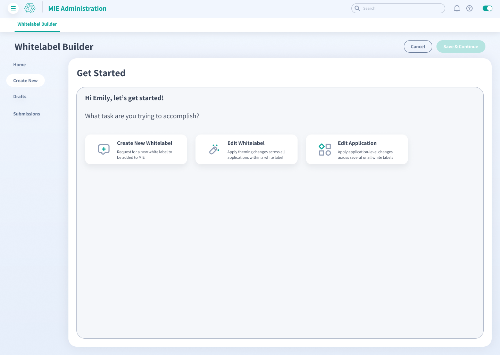
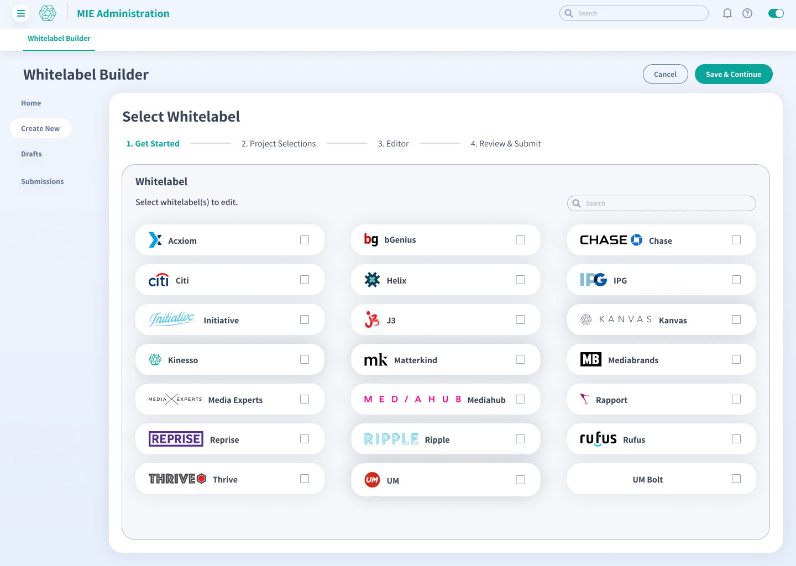
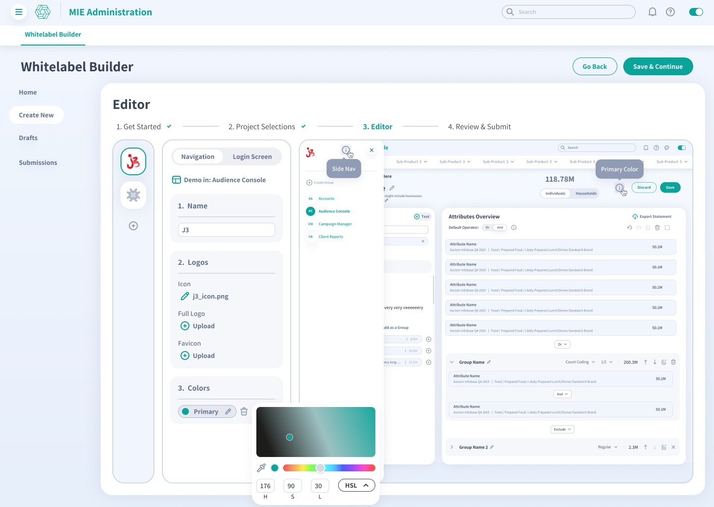
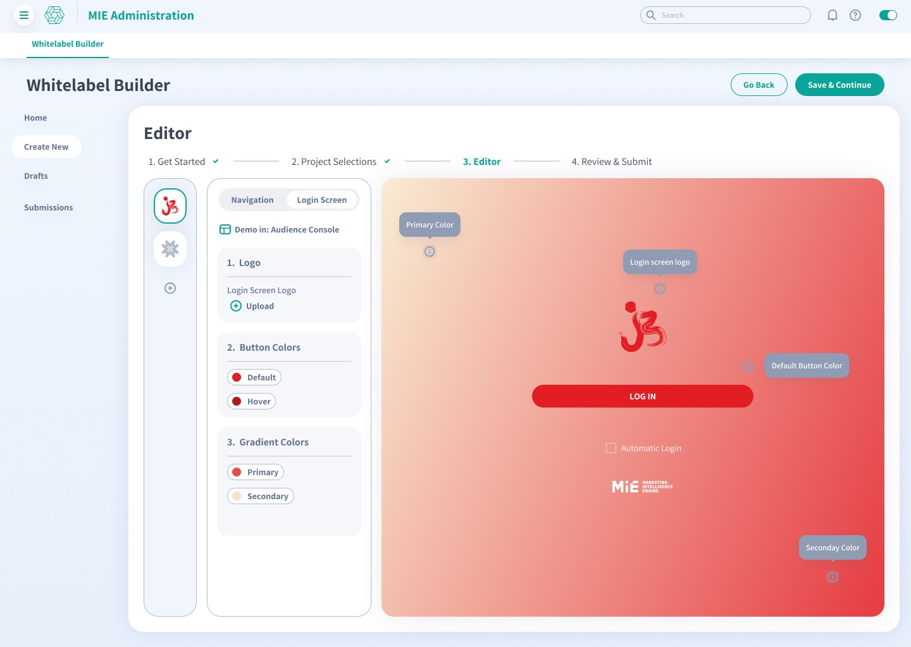
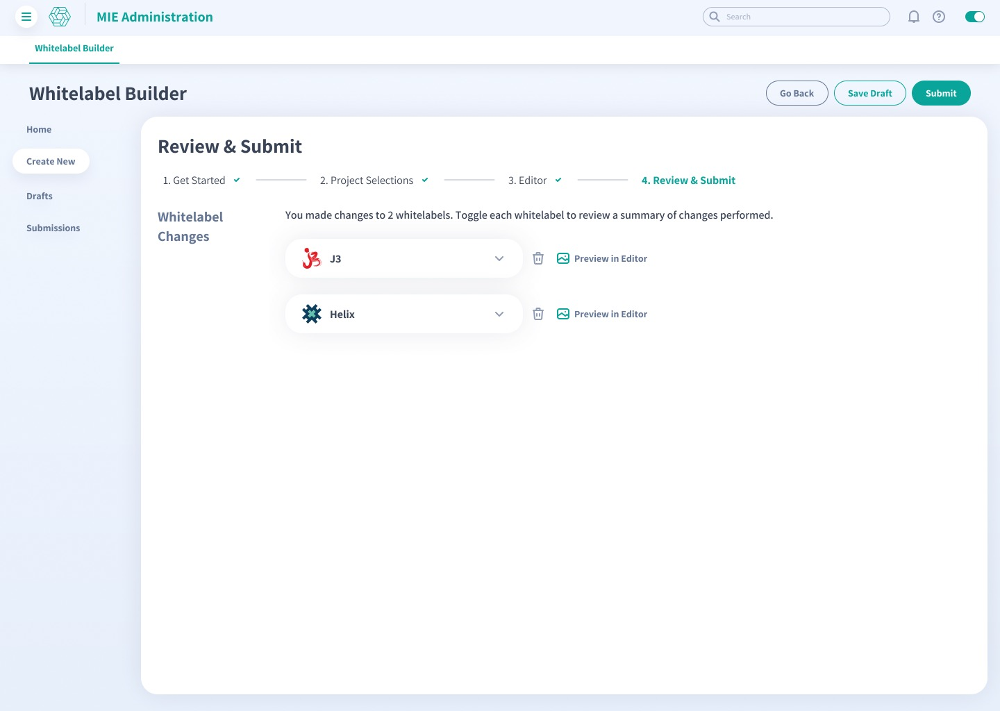

Whitelabel Builder
I led the UX research and workflow strategy for a shipped tool that helped Marketing Intelligence Engine (MIE) teams prepare branded product environments for new clients from day one. The work connected client onboarding, white-label brand rules, and application-level changes in one guided flow.
Every new client needed a branded environment. The setup needed to work across a product suite.
- Primary usersMIE teams across different verticals onboarding enterprise clients such as Sony, Amazon, and Walmart.
- Operating challengeTeams had to manage brand-level and application-level changes while keeping the experience consistent across products.
- My roleI led the research and workflow definition, then collaborated with the UI designers who created the screens shown here. Together, we translated the findings into a flow that worked within the existing design system.

The first decision was the job the team needed to do.
Research with product managers and developers surfaced three related jobs: create a new white-label environment, update an existing environment across its applications, or change one application across several brands. The entry point made that choice explicit before exposing settings.
- InterviewsI interviewed product managers and developers representing the needs and constraints of their verticals.
- Workflow mappingWorkshops and journey maps connected onboarding steps to product and engineering dependencies.
- Design collaborationI translated the findings into requirements and workflow prototypes, then collaborated with the UI designers as they turned that direction into the screens shown here. We refined the flow through usability testing and analytics.

A four-step path gave a complicated setup a clear beginning and end.
The workflow moved teams through task and project selection, editing, and a final review. Drafts and visible progress made it easier to pause, return, and understand what remained.
- Scope firstTeams could select one or more white-label environments before making changes.
- Guided progressA shared stepper kept the same mental model across different setup jobs.
- Safe returnDraft and submission states gave ongoing work a clear home outside the editor.
The research turned platform rules into decisions teams could understand.
- Brand or applicationThe workflow separated changes that affected an entire white-label environment from changes to a single application.
- Design system guardrailsShared components and interaction patterns kept the builder connected to the design system already used across MIE.
- Review before releaseLive previews and a change summary gave teams a final checkpoint before submitting updates.

Teams could make branding decisions in context.
Names, logos, colors, and navigation updated together beside the application preview. Teams could see how the full environment would look before moving to review.
- See it togetherEach choice appeared alongside the rest of the brand so teams could judge the environment as a whole.
- Adjust in placeTeams could keep editing without leaving the builder or opening a separate preview.
- Reuse the patternThe controls stayed consistent from one client environment to the next.

The client environment felt specific from the first login.
The login editor brought the logo, button colors, and gradient into one previewable surface. New accounts could enter an environment that already reflected their brand instead of waiting for a separate styling pass.
- First impressionThe login state carried the client's identity before users reached the product itself.
- One surfaceTeams could make related choices together and judge them in context.
- Faster onboardingThe shipped workflow helped MIE teams prepare personalized client environments sooner.
A final review protected the last step before release.

- Tested and shippedThe end-to-end workflow moved through prototype and usability testing before release.
- Quicker onboardingMIE teams could prepare new client environments faster through one repeatable path.
- Personal from day oneClients entered a product environment that already carried their identity.
From day one, new clients entered a product that already felt like their own.Shipped outcome · Faster onboarding across a white-label product suite